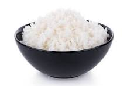

home
Rice

A simple dish to add carbs to your diet.
Cook Time
Ingredients
- Rice 1/2 cups
- Salt 1 pinch
- Water 1 cups
Instructions
- Add Rice, Water and Salt to small pot with lid
- Set it to high and wait for it to boil.
- Leave on boil for 4 minutes
- Turn off the heat, leave pot on stove
- Wait of lid to stop steaming
- Serve